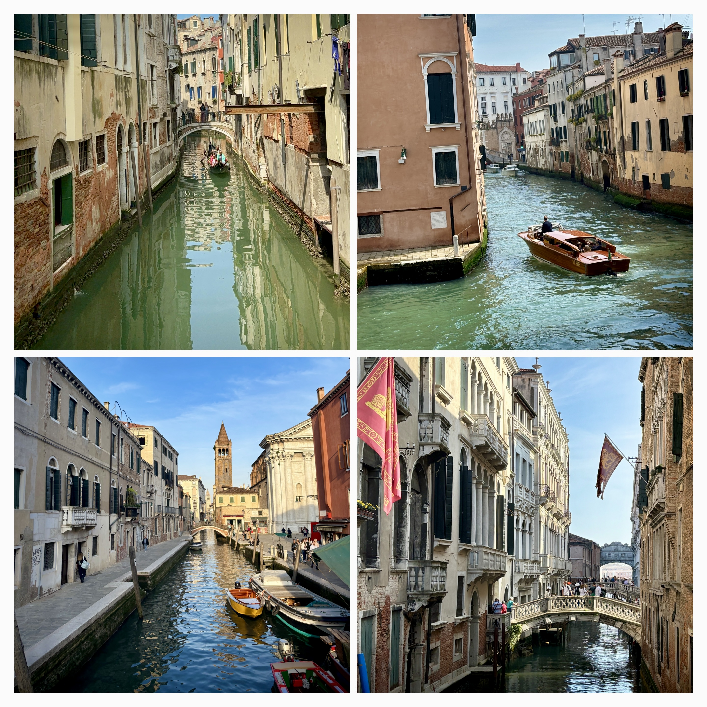
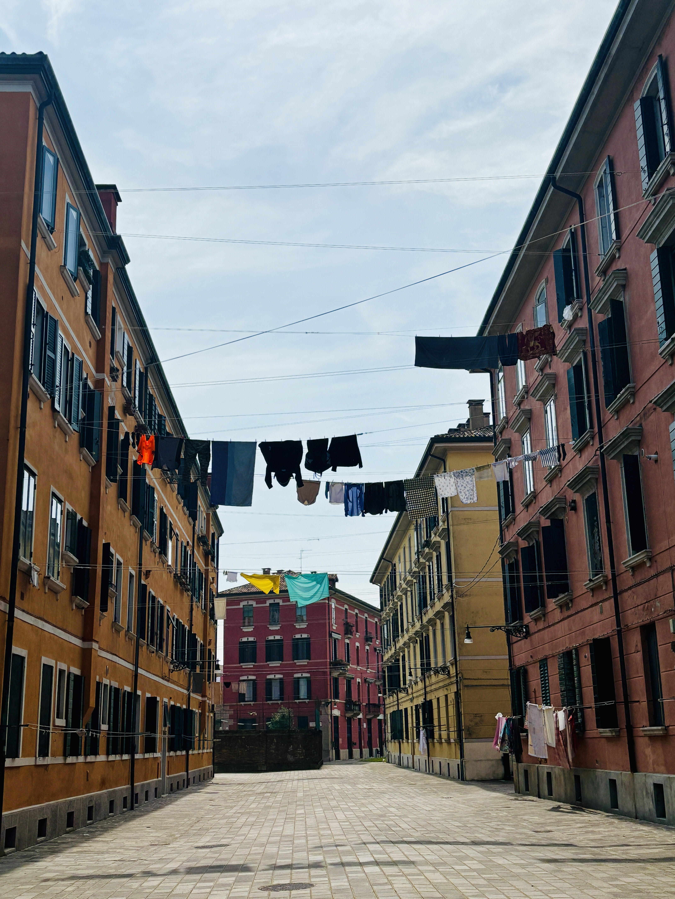
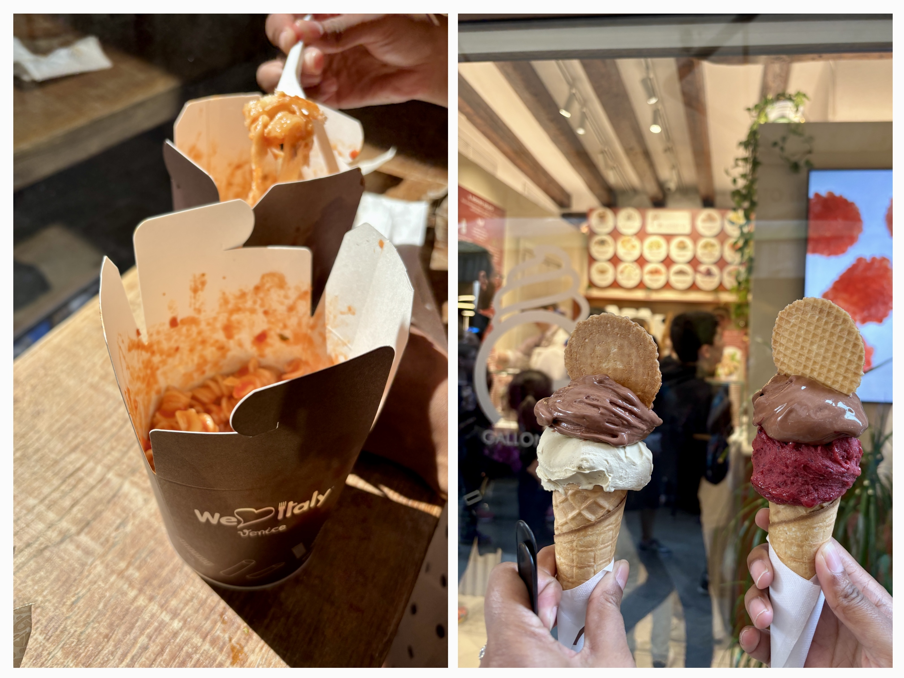
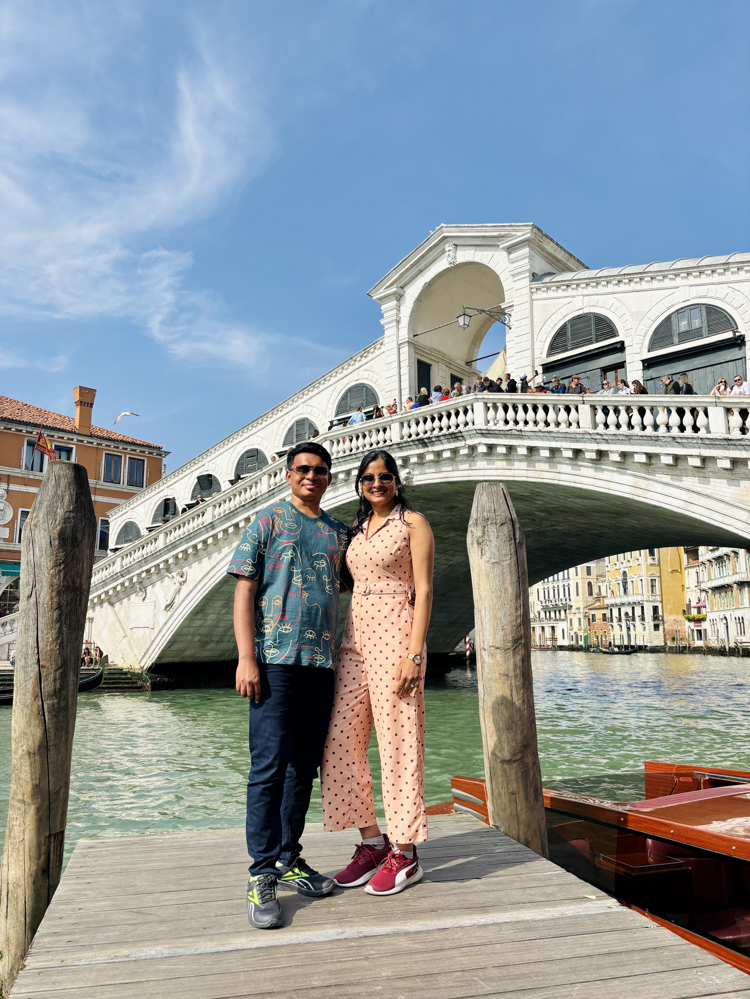
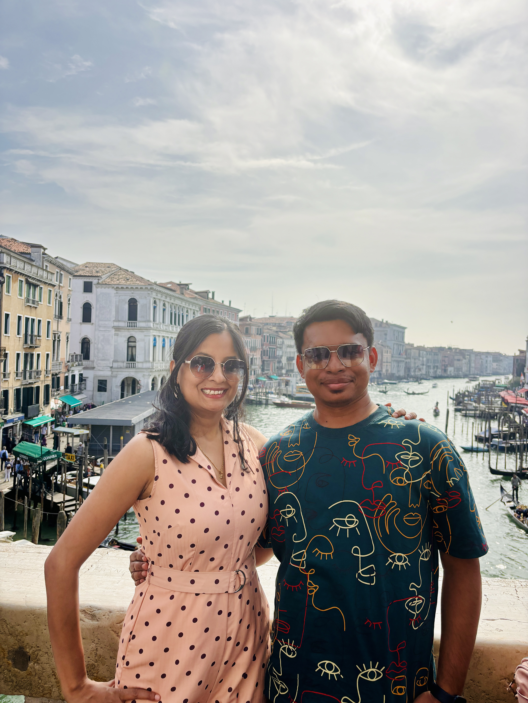
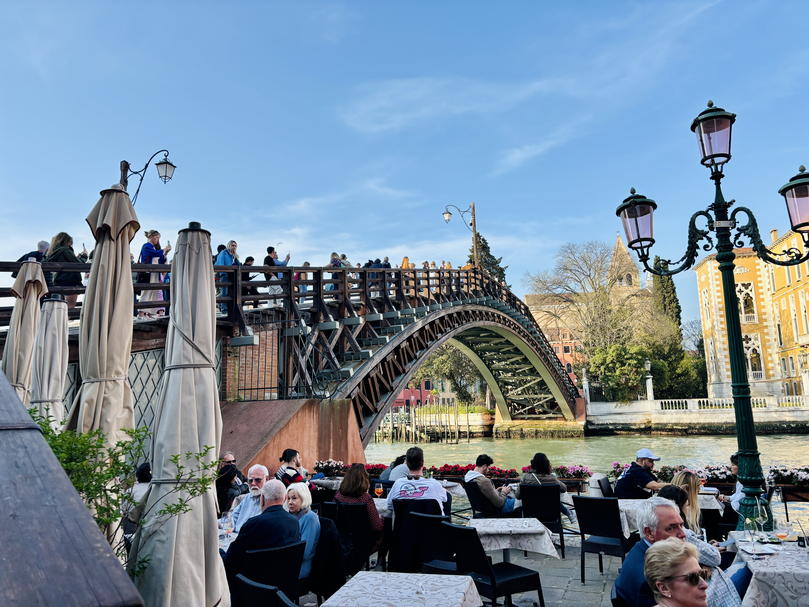
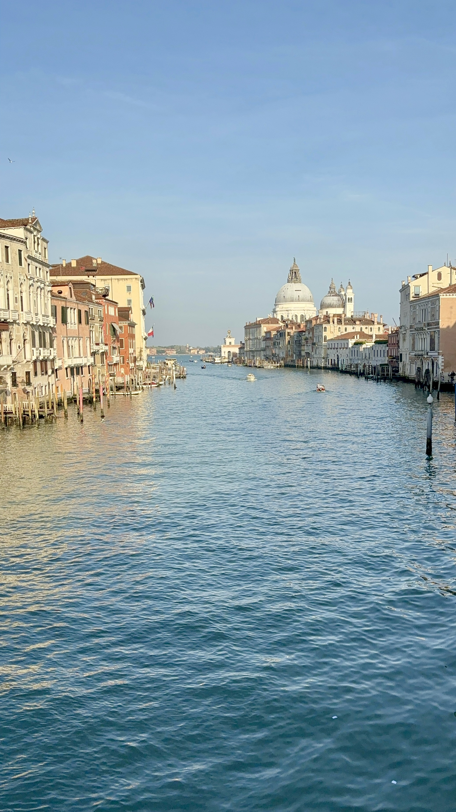
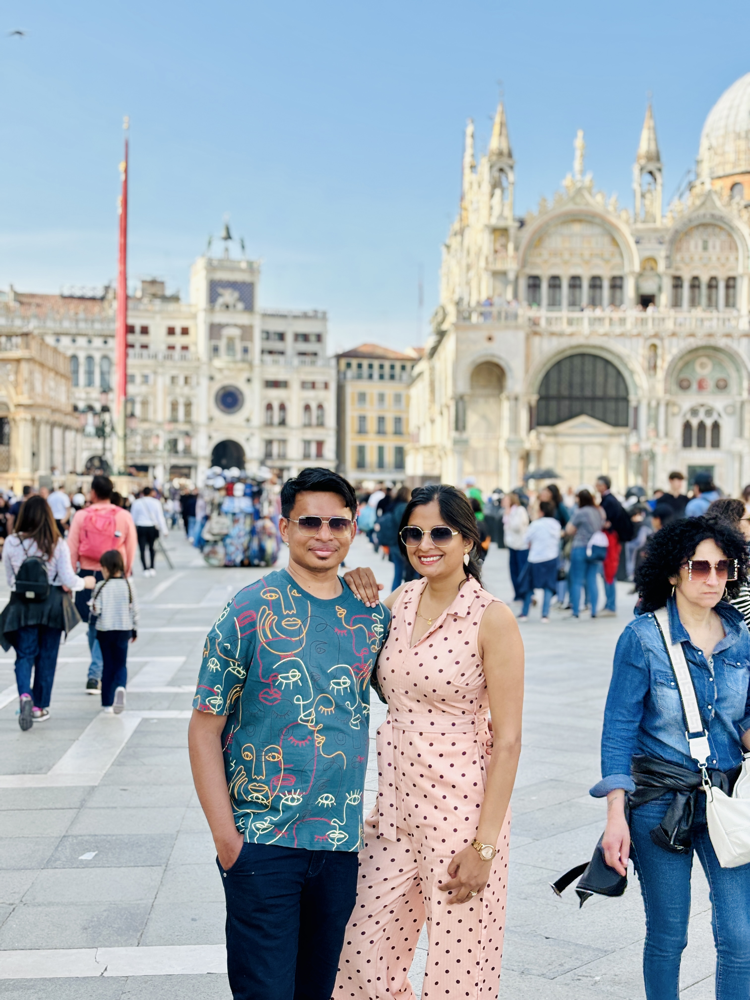
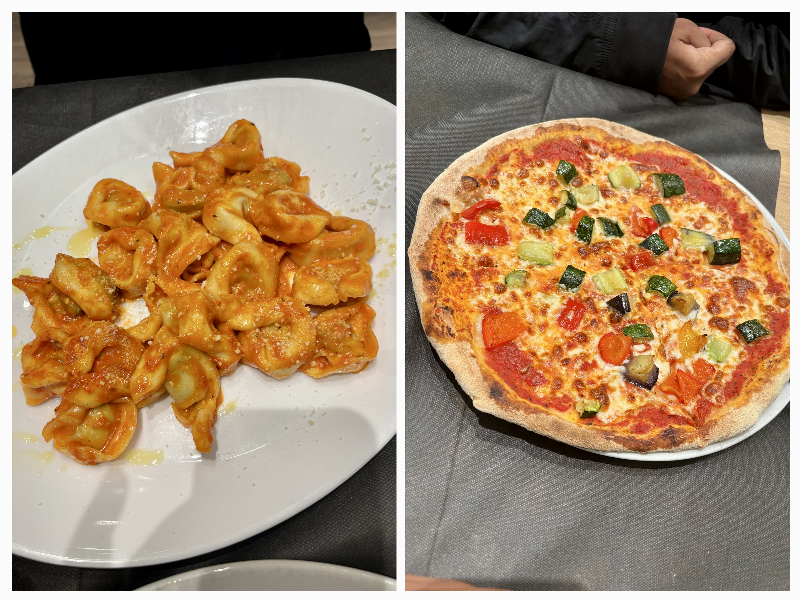

We arrived in Venice just as the canals caught their first shimmer of morning light. Often called the Paris of Italy, the city felt like a waking dream—romantic, chaotic, and eager to surprise us at every corner.

Our Airbnb check-in wasn’t until 2 p.m., but the host—bless him—allowed us in early so we could freshen up and drop our bags. Two hours later, as we stepped out, he raised an eyebrow: “I thought you said 20 minutes?” We were just as confused. Maybe it was lost in translation. Or maybe we got lost in our own reflections. Venice does that to you.
Hungry and with a loosely sketched plan, we hopped on a bus without tickets – something we’d learned is not uncommon in Italy (though probably not recommended). The weather was a welcome contrast to Porto and Lisbon: a soft blend of sun and chill, like Venice knew we deserved a little kindness.
Our first food stop was closed—classic Sunday curveball. So we wandered toward the city’s heart, following narrow alleys, gondola glides, and curious sights. One detail caught us off guard: clothes strung between buildings. A rare sight in Europe, but here in Venice, it felt poetic—daily life woven into fairytale views.

We were staying a bit outside the main island, in what locals might call the “tail” of Venice (yes, it’s shaped like a fish!). It’s cheaper, quieter, and gave us a more authentic pulse of the place. On the way, we stumbled into a supermarket—which, for me, is like Dmart’s European cousin. I can’t resist them. We stocked up on chocolates, cold drinks, and the kind of small comforts that rescue you from overpriced tourist traps. Grocery shopping in a foreign country has its own thrill. There’s something grounding about it—it makes you feel less like a visitor and more like a local-in-training.
Eventually, we stumbled upon I Love Italy, and the pasta served there was nothing short of divine. Creamy. Rich. Utterly unforgettable. Even now, I taste it like a bookmarked page in my memory.
Then came gelato. We skipped the flashy spots and found a tiny old-school gelateria—no frills, just magic in cones. Chocolate and pistachio. Fruit sorbet and dark chocolate. Each flavor a gentle confession from Italy.

Venetian Bridges & Plazas: Our Walk Through History
Venice is a labyrinth of water, held together by hundreds of bridges, each with its own story, style, and secrets. Here are the iconic highlights we explored during our unforgettable day:
Rialto Bridge
Venice’s oldest and most famous bridge, the Rialto is like the city’s grand old storyteller.
- Built in 1591, it replaced a wooden version that kept collapsing (oops).
- Designed by Antonio da Ponte, who beat out Michelangelo for the job—talk about underdog glory!
- It’s made of Istrian stone, and has shops lining both sides, so yes, you can literally shop on a bridge.
- Legend says the architect made a pact with the devil to keep the bridge standing. The price? The soul of the first person to cross it… which turned out to be his wife. 😬


Bridge of Sighs
This isn’t your average romantic bridge—it’s got a dark twist.
- Built in 1603, it connects the Doge’s Palace to the prison.
- Prisoners would cross it after sentencing, catching their last glimpse of Venice through its tiny stone-barred windows. Hence, the “sighs.”
- Ironically, it’s now a symbol of eternal love—legend says if you kiss under it at sunset while the bells toll, your love will last forever.
- Casanova himself crossed it… and escaped prison. Classic.
Legend says that if a couple kisses in a gondola under the Bridge of Sighs at sunset while the church bells toll, they will be granted eternal love and happiness.
Venetian FolklorePonte dell’Accademia
The artsy rebel of Venice’s bridges.
- One of only four bridges that span the Grand Canal.
- Originally built in 1854 as a steel bridge, but Venetians hated it. So in 1933, they replaced it with a wooden one—which they still love.
- It offers the best view of the Grand Canal, especially at sunset.
- Once covered in love locks, but the city cracked down to save the bridge’s structure. Love is eternal, but wood isn’t.


St. Mark’s Square (Piazza San Marco)
Venice’s living room—and Napoleon’s favorite.
- Called “the drawing room of Europe” by Napoleon, it’s the city’s social and spiritual heart.
- Home to St. Mark’s Basilica, the Campanile, and the Doge’s Palace.
- Floods regularly thanks to its low elevation—locals call it “Aqua Alta”, and tourists call it “Oops, my shoes.”
- The square is also famous for its pigeons, orchestras, and the legendary Caffè Florian, which has been serving espresso since 1720.

Before retreating to our apartment (nearly an hour away, ticket skipped again—we’ll repent in another country), we did one last round of “Dmart” shopping: chocolates, olive oil, cinnamon—souvenirs that smell like tomorrow’s nostalgia.
Dinner was quiet and cozy—our first taste of risotto, and yes, we liked it. As we packed, we realized this was our last full day in Italy.

Only 24 hours in Venice. Just a single day. But somehow, it was enough.
Enough to feel the pull of its pulse. Enough to be surprised, comforted, filled. Enough to remember it always.
Must-Visit Places in Venice
If you ever find yourself in Venice, here are some incredible spots to explore:
- St. Mark’s Basilica: Admire the Byzantine architecture.
- Grand Canal: Take a water taxi or gondola ride along the main waterway.
- Rialto Bridge: Cross this historic stone bridge and shop.
- Doge’s Palace: Tour this magnificent Venetian Gothic palace.
- Piazza San Marco: Relax and watch the orchestras in the central square.
- Murano Island: Watch glass-blowing artisans at work.
- Burano Island: Wander among the famous bright, colorful houses.
- Ponte dell'Accademia: Snap the iconic postcard view of Grand Canal.
Join the conversation
Have a question, a tip, or a memory from the same place? Drop a comment below — no signup needed.